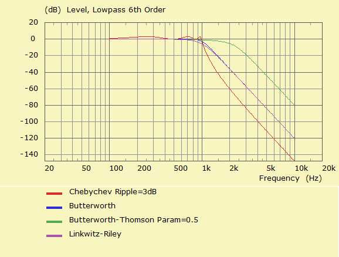

| Identifier | [Block, BU, BE, LR, CH, BT] | |
| Format | Specifiers | |
| Purpose | Filter alignment | |
| Used in | Filter | |
Alignment Types belong to the parameter-set of standard filter alignments.

Alignment specifies the lowpass version of the transfer-function. Eventually the lowpass can be transformed to a high-, band- or allpass using parameter-set Transform Types. See also Filter Examples.
Block specifies a 1st or 2nd order filter-block. The filter frequency is f0= and the quality factor is Q=.
For Order=1 the lowpass transfer function is

For Order=2 the lowpass transfer function is

with normalized Laplace variable, which is set to the technical frequency sn = j·f/f0 for calculation of the transfer-function.
For example
Filter 'F1'
f0=1kHz Order=2 Block Q=1
The Butterworth alignment creates a maximally flat amplitude response without rippling for any Order >= 2. At f0= the amplitude is down by 3dB.
The sum of low and high-pass BU-alignments yield a constant voltage and a constant power for odd order or a 3dB peak at crossover for even order, respectively.
Note, BU-alignment is identical to the BT-alignment with control parameter Param=0.
For example
Filter 'F1'
f0=1kHz Order=6 BU
The Bessel alignment yields a maximally flat curve of the Group Delay without rippling for any Order >= 2
The sum of low and high-pass BE-alignemnts do not yield a constant voltage nor a constant power. However, the filter-frequencies of low and high-pass can be tweaked so that an almost flat voltage and power response is achieved.
Note, BE-alignment is identical to the BT-alignment with control parameter Param=1.
For example
Filter 'F1'
f0=1kHz Order=6 BE
The order of the the Linkwitz-Riley alignment is always even, and the order >= 4. This is so because the LR-transfer-function is the product of two identical Butterworth (BU) functions. The LR has a smoother transition range than the BU-filter. However, the Linkwitz-Riley Q-factors are more moderate as they stem from the BU-alignment of half the order. At f0= the amplitude is down by 6dB.
The sum of low and high-pass LR-alignments yield a constant voltage. The power-sum shows a drop of 3dB at cross-over.
For example
Filter 'F1'
f0=1kHz Order=6 LR
The Chebychev alignment family creates an amplitude-function with a steep transition for any Order >= 2. At f0= the amplitude is down by 3dB. There is a controlled ripple in the passband, which can be specified with the help of parameter Ripple=.
For example
Filter 'F1'
f0=1kHz Order=6 CH Ripple=3dB
The Butterworth-Thomson alignment family creates transfer-functions with properties from functions of Butterworth and Bessel for any Order >= 2. With the help of parameter Param= we interpolate between the BU- and BE-poles. If Param=0 we create a Butterworth alignment. With Param=1 a Bessel function. Values beyond Param>1 will extrapolate the poles.
For example
Filter 'F1'
f0=1kHz Order=6 BT Param=0.5